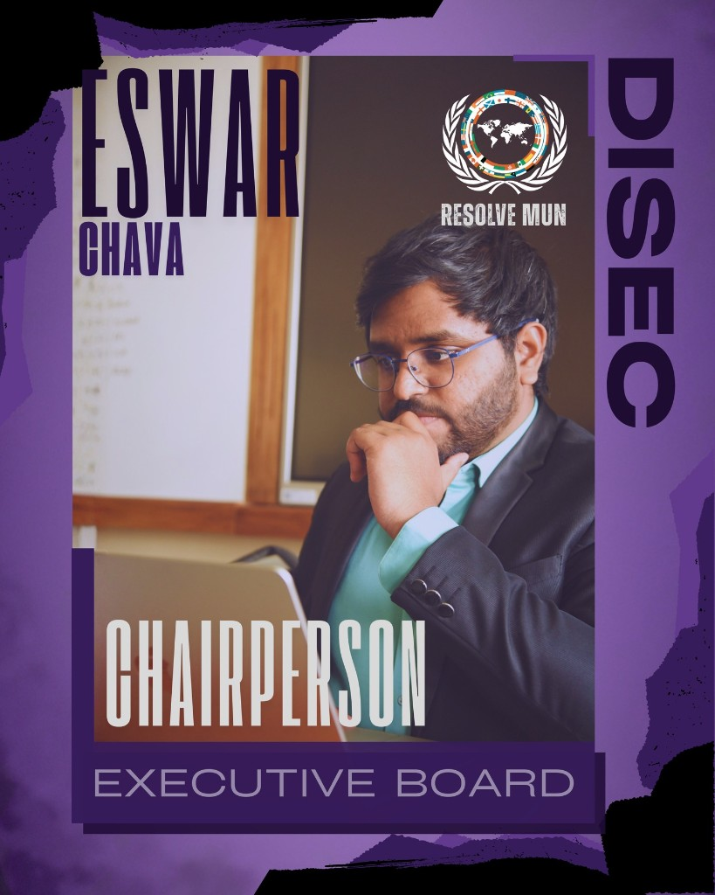
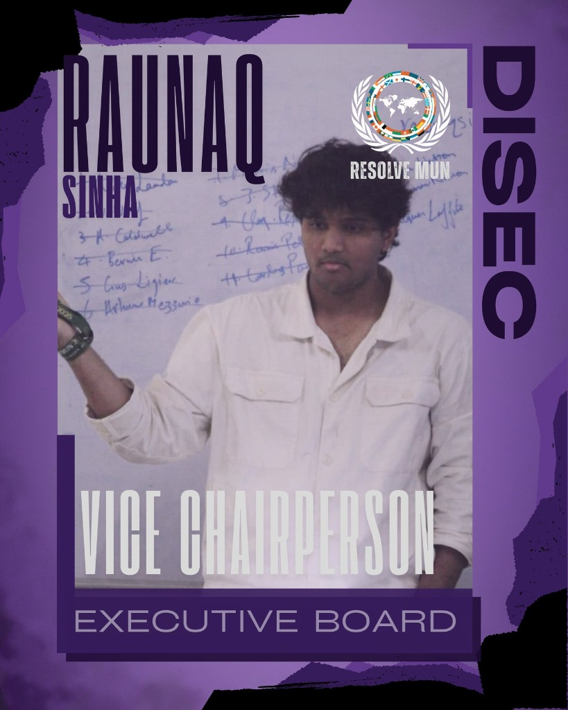
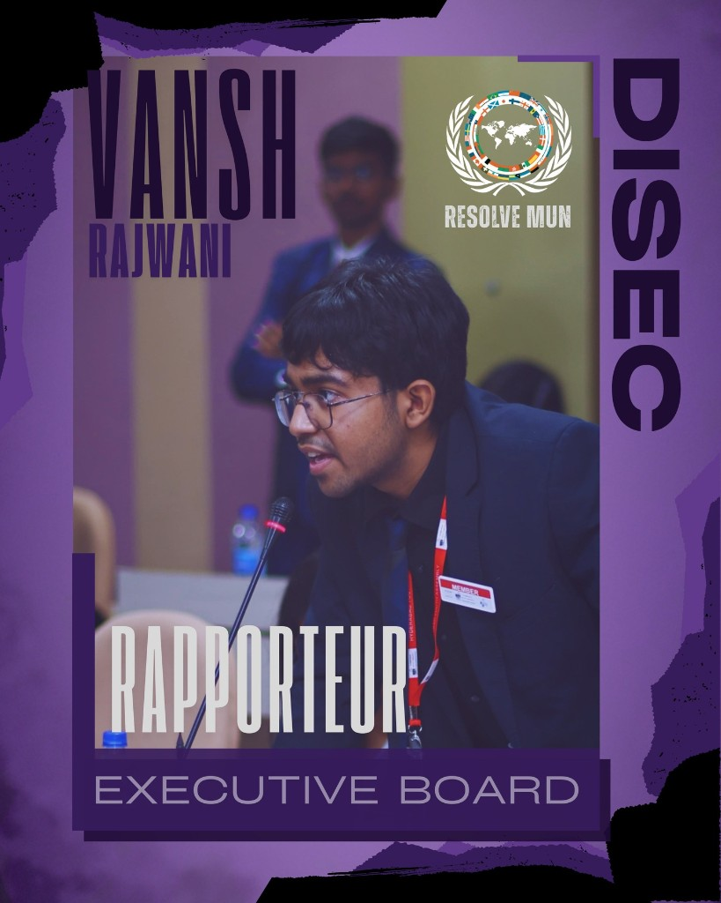

United Nations General Assembly
UNGA — DISEC
Disarmament and international security in outer space.
Regulating ASAT & Dual-Use Space Tech (PAROS)
Discussion on regulating Anti-Satellite Weapons, Offensive Counter-Space capabilities and Dual-Use Space Technologies within the Framework of Preventing an Arms Race in Outer Space (PAROS).
The Committee
The Disarmament and International Security Committee (DISEC) is the First Committee of the UN General Assembly. At ONYX MUN, delegates address emerging threats in orbit and the militarisation of space systems with dual-use applications.
Key debate questions
- Should ASAT testing be banned or regulated through transparency measures?
- How can PAROS apply to commercial dual-use space technologies?
- Who verifies compliance when space weapons lack clear international definitions?
Discussion framework
- Transparency and verification for anti-satellite (ASAT) testing.
- Limits on offensive counter-space capabilities.
- Governance of dual-use space technologies under PAROS.
- Debris mitigation and long-term sustainability of outer space.
Expectations
Delegates should combine technical awareness with diplomatic negotiation to produce actionable, multilateral outcomes on space security.
Leadership
Executive Board
The dais leading UNGA-DISEC at ONYX MUN 2026.


